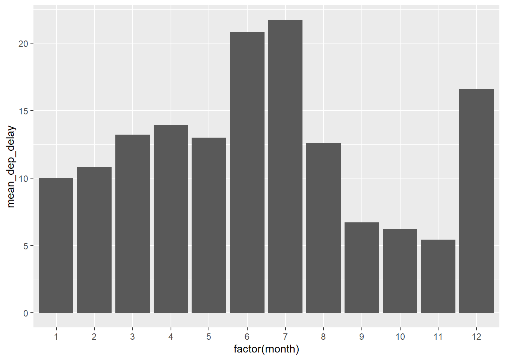

Chapter 4 Managing Data with R
Reference: see https://r4ds.had.co.nz/transform.html
Optional Reading: ML with R Ch2
4.1 Missing Values
Missing values are common in real datasets.
NA is used to denote missing values.
(x <- c(1, 2, 3, NA, 4, NA, 4)) # we can use (x<-1) to assign 1 to x and display x at the same time
## [1] 1 2 3 NA 4 NA 4
mean(x) # mean cannot be computed when missing values exist
## [1] NA
mean(x, na.rm = TRUE) # NA values will be removed before computing mean
## [1] 2.8
sd(x) # sd cannot be computed when missing values exist
## [1] NA
sd(x, na.rm = TRUE) # NA values will be removed before computing SD
## [1] 1.30384
is.na(x) # logical vector
## [1] FALSE FALSE FALSE TRUE FALSE TRUE FALSE
x[!is.na(x)] #select the elements with non-missing valuess
## [1] 1 2 3 4 4
na.omit(x) # select the elements with non-missing valuess
## [1] 1 2 3 4 4
## attr(,"na.action")
## [1] 4 6
## attr(,"class")
## [1] "omit"4.2 Saving, loading, and removing R data structures
Removing all objects in R:
ls() returns a vector of all data structures currently in memory
To remove x from the memory
rm(x)
x # because we have deleted x, an error message occurs
## Error in eval(expr, envir, enclos): object 'x' not foundSaving objects to a file (regardless of whether they are vectors, factors, lists, etc)
Loading objects from a .RData file.
4.3 Importing and saving data from CSV files
Finding current directory
getwd()
## [1] "C:/Queens Teaching/01_Teaching/STAT 362 W24 R for data science/01c_published_webiste"If you use mac, you will probably see "/Users/..../".
Setting working directory
setwd("C:/Queens Teaching/01_Teaching/STAT 362 W24 R for data science/01_lect_notes/Ch4_Managing_Data_and_dplyr") # use /, not \If you use mac, change the above code accordingly.
Writing to a file
my_data <- data.frame(x = c(5, 10, 3), y = c(4, 5, 6))
my_data
## x y
## 1 5 4
## 2 10 5
## 3 3 6
write.csv(my_data, "C:/Queens Teaching/01_Teaching/STAT 362 W24 R for data science/01_lect_notes/Ch4_Managing_Data_and_dplyr/my_data.csv", row.names = FALSE)Reading a csv file
A comma-separated values (CSV) file is a delimited text file that uses a comma to separate values. If we use read_csv from the package tidyverse, the resulting object is a tibble. If we use read.csv from base R, the resulting object is a data frame. See R for data science (https://r4ds.had.co.nz/data-import.html) for a discussion on the differences between read.csv and read_csv.
4.4 Data Transformation with dplyr
Preparation
We will use a dataset in the package nycflights13. To install it:
To use the dataset or functions in the package, we first load the library:
In Chapter 4, we have installed tidyverse, which contains the package dplyr. Now, load the package
nycflights13
The dataset flights in the package nyclfights13 contains all \(336,776\) flights that departed from New York City in 2013. Check ?flights for details.
# let's view the dataset
flights
## # A tibble: 336,776 × 19
## year month day dep_time sched_…¹ dep_d…² arr_t…³ sched…⁴ arr_d…⁵ carrier
## <int> <int> <int> <int> <int> <dbl> <int> <int> <dbl> <chr>
## 1 2013 1 1 517 515 2 830 819 11 UA
## 2 2013 1 1 533 529 4 850 830 20 UA
## 3 2013 1 1 542 540 2 923 850 33 AA
## 4 2013 1 1 544 545 -1 1004 1022 -18 B6
## 5 2013 1 1 554 600 -6 812 837 -25 DL
## 6 2013 1 1 554 558 -4 740 728 12 UA
## 7 2013 1 1 555 600 -5 913 854 19 B6
## 8 2013 1 1 557 600 -3 709 723 -14 EV
## 9 2013 1 1 557 600 -3 838 846 -8 B6
## 10 2013 1 1 558 600 -2 753 745 8 AA
## # … with 336,766 more rows, 9 more variables: flight <int>, tailnum <chr>,
## # origin <chr>, dest <chr>, air_time <dbl>, distance <dbl>, hour <dbl>,
## # minute <dbl>, time_hour <dttm>, and abbreviated variable names
## # ¹sched_dep_time, ²dep_delay, ³arr_time, ⁴sched_arr_time, ⁵arr_delayflights is a tibble. Tibbles are data frames with better properties.
Optional: If you are interested in the differences between a data frame and a tibble, you can go to
https://cran.r-project.org/web/packages/tibble/vignettes/tibble.html
To view the complete dataset, use View(flights).
Five key dplyr functions
arrange(): reorder the rowsfliter(): pick observations by their valuesselect(): pick variables by their namesmutate(): create new variables with functions of existing variablessummarize(): collapse many values down to a single summary
All functions work similarly:
- The first argument is a data frame/ tibble
- The subsequent argument describe what to do with the data frame, using the variable names (without quotes).
- The result is a new data frame.
Of course, it is also possible to perform the same tasks without using dplyr functions. We will also discuss briefly how to use the base subsetting with [] to select the data. In general, the functions in dplyr are designed to transform the data more easily.
4.5 arrange()
arrange() orders your dataset. If more than one column name is provided, each additional column will be used to break ties in the values of preceding columns.
To reorder by a column in ascending order:
Let’s create a simple dataset to illustrate this because flights is already sorted in year, month and day.
(data <- tibble(x = c(2, 2, 1, 4, 5), y = c(2, 3, 10, 10, 10)))
## # A tibble: 5 × 2
## x y
## <dbl> <dbl>
## 1 2 2
## 2 2 3
## 3 1 10
## 4 4 10
## 5 5 10
arrange(data, x)
## # A tibble: 5 × 2
## x y
## <dbl> <dbl>
## 1 1 10
## 2 2 2
## 3 2 3
## 4 4 10
## 5 5 10
# first sort in ascending order of x, use y to break any ties and sort in descending order
arrange(data, x, desc(y))
## # A tibble: 5 × 2
## x y
## <dbl> <dbl>
## 1 1 10
## 2 2 3
## 3 2 2
## 4 4 10
## 5 5 10To reorder by a column in descending order, use desc():
Missing values are always sorted at the end
4.6 filter()
filter() only includes rows where the condition is TRUE
Select all flights on Jan 1st:
# flights is the name of your data frame
# month == 1, day == 1 is the condition
(jan1 <- filter(flights, month == 1, day == 1))
## # A tibble: 842 × 19
## year month day dep_time sched_…¹ dep_d…² arr_t…³ sched…⁴ arr_d…⁵ carrier
## <int> <int> <int> <int> <int> <dbl> <int> <int> <dbl> <chr>
## 1 2013 1 1 517 515 2 830 819 11 UA
## 2 2013 1 1 533 529 4 850 830 20 UA
## 3 2013 1 1 542 540 2 923 850 33 AA
## 4 2013 1 1 544 545 -1 1004 1022 -18 B6
## 5 2013 1 1 554 600 -6 812 837 -25 DL
## 6 2013 1 1 554 558 -4 740 728 12 UA
## 7 2013 1 1 555 600 -5 913 854 19 B6
## 8 2013 1 1 557 600 -3 709 723 -14 EV
## 9 2013 1 1 557 600 -3 838 846 -8 B6
## 10 2013 1 1 558 600 -2 753 745 8 AA
## # … with 832 more rows, 9 more variables: flight <int>, tailnum <chr>,
## # origin <chr>, dest <chr>, air_time <dbl>, distance <dbl>, hour <dbl>,
## # minute <dbl>, time_hour <dttm>, and abbreviated variable names
## # ¹sched_dep_time, ²dep_delay, ³arr_time, ⁴sched_arr_time, ⁵arr_delayLet’s use a simple dataset to see how to perform the same task without filter:
# just a simple dataset
(data <- tibble(x = c(1, 3, 5, 5, 3), y = 1:5))
## # A tibble: 5 × 2
## x y
## <dbl> <int>
## 1 1 1
## 2 3 2
## 3 5 3
## 4 5 4
## 5 3 5
data$x == 5 # logical vector
## [1] FALSE FALSE TRUE TRUE FALSE
data[data$x == 5, ] # select the rows with value "TRUE"
## # A tibble: 2 × 2
## x y
## <dbl> <int>
## 1 5 3
## 2 5 4
# returning to the flights dataset
base_jan1 <- flights[(flights$month == 1 & flights$day == 1), ](flights$month == 1 & flights$day == 1) is a logical vector indicating if the corresponding flight was on Jan 1 (TRUE if yes).
Now, let’s check if jan1 and base_jan1 are the same using identical:
identical(jan1, base_jan1) # TURE means they are the same, FALSE means they are not the same
## [1] TRUEMore Examples
Select flights that departed in Nov or Dec
filter(flights, month == 11 | month == 12)
# alternatively, simpler code
filter(flights, month %in% c(11, 12))How to use the operator %in%?
y <- c(1,3,5)
x <- 1
x %in% y #whether 1 is in {1,3,5}
## [1] TRUE
x <- c(1,3,2,4,1)
x %in% y # check whether each element in x is in {1,3,5}
## [1] TRUE TRUE FALSE FALSE TRUE%in% also works with characters
The result is TRUE FALSE because "a" is in c("a", "c", "d") and "b" is not in c("a", "c", "d").
Perform the same task without filter:
Flights that were not delayed (on arrival or departure) by more than two hours:
Without using filter
Let’s check if delay1 and delay2 are the same.
The result is FALSE, meaning delay1 and delay2 are not the same. Why? Because some elements in flights$arr_delay <= 120 & flights$dep_delay <= 120 are NA.
# to find out the number of NA values
sum(is.na(flights$arr_delay <= 120 & flights$dep_delay <= 120))
## [1] 9304As a result, with the base subsetting method, a row with all NA values will be selected. On the other hand, for filter, when a condition evaluates to NA, the row will be dropped. Let’s create a small dataset to illustrate this. From now on, let’s try to use tibble instead of data.frame.
data <- tibble(x = 1:4, y = c(1, 2, NA, 4))
data[data$y <= 3, ]
## # A tibble: 3 × 2
## x y
## <int> <dbl>
## 1 1 1
## 2 2 2
## 3 NA NA
# to avoid the above problem
# which() returns which elements are TRUE
which(data$y <= 3) # the result is 1, 2
## [1] 1 2
data[which(data$y <= 3), ] # select row 1, row 2
## # A tibble: 2 × 2
## x y
## <int> <dbl>
## 1 1 1
## 2 2 2
# using filter
filter(data, y <= 3)
## # A tibble: 2 × 2
## x y
## <int> <dbl>
## 1 1 1
## 2 2 2
# if we want to include the row where the value of y is NA
# recall that | means "or"
data[which(data$y <= 3 | is.na(data$y)), ]
## # A tibble: 3 × 2
## x y
## <int> <dbl>
## 1 1 1
## 2 2 2
## 3 3 NA
# using filter
filter(data, y <= 3 | is.na(y))
## # A tibble: 3 × 2
## x y
## <int> <dbl>
## 1 1 1
## 2 2 2
## 3 3 NAIf you want to drop the NA values with base subsetting[], you may use
To see if delay1 and delay3 are exactly the same:
At this point, you should see that filter could perform the same tasks with simpler code.
4.6.1 Exercises
1a. Find all flights that had an arrival delay of two or more hours (drop the rows with NA in arr_delay).
# Using "filter"
filter(flights, arr_delay >= 120)
# Without using "filter"
flights[which(flights$arr_delay >= 120), ] 1b. Find all flights that flew to Houston (IAH or HOU).
# Using "filter"
filter(flights, dest %in% c("IAH", "HOU"))
# Without using "filter"
flights[which(flights$dest %in% c("IAH", "HOU")), ]1c. Find all flights that were operated by United, American, or Delta
# find all the sorted carrier codes in the dataset
sort(unique(flights$carrier))
## [1] "9E" "AA" "AS" "B6" "DL" "EV" "F9" "FL" "HA" "MQ" "OO" "UA" "US" "VX"
## [15] "WN" "YV"
# look up airline names from their carrier codes
airlines
## # A tibble: 16 × 2
## carrier name
## <chr> <chr>
## 1 9E Endeavor Air Inc.
## 2 AA American Airlines Inc.
## 3 AS Alaska Airlines Inc.
## 4 B6 JetBlue Airways
## 5 DL Delta Air Lines Inc.
## 6 EV ExpressJet Airlines Inc.
## 7 F9 Frontier Airlines Inc.
## 8 FL AirTran Airways Corporation
## 9 HA Hawaiian Airlines Inc.
## 10 MQ Envoy Air
## 11 OO SkyWest Airlines Inc.
## 12 UA United Air Lines Inc.
## 13 US US Airways Inc.
## 14 VX Virgin America
## 15 WN Southwest Airlines Co.
## 16 YV Mesa Airlines Inc.
# after looking up the names, we know UA = United, AA = American, DL = Delta
filter(flights, carrier %in% c("UA", "AA", "DL"))
## # A tibble: 139,504 × 19
## year month day dep_time sched_…¹ dep_d…² arr_t…³ sched…⁴ arr_d…⁵ carrier
## <int> <int> <int> <int> <int> <dbl> <int> <int> <dbl> <chr>
## 1 2013 1 1 517 515 2 830 819 11 UA
## 2 2013 1 1 533 529 4 850 830 20 UA
## 3 2013 1 1 542 540 2 923 850 33 AA
## 4 2013 1 1 554 600 -6 812 837 -25 DL
## 5 2013 1 1 554 558 -4 740 728 12 UA
## 6 2013 1 1 558 600 -2 753 745 8 AA
## 7 2013 1 1 558 600 -2 924 917 7 UA
## 8 2013 1 1 558 600 -2 923 937 -14 UA
## 9 2013 1 1 559 600 -1 941 910 31 AA
## 10 2013 1 1 559 600 -1 854 902 -8 UA
## # … with 139,494 more rows, 9 more variables: flight <int>, tailnum <chr>,
## # origin <chr>, dest <chr>, air_time <dbl>, distance <dbl>, hour <dbl>,
## # minute <dbl>, time_hour <dttm>, and abbreviated variable names
## # ¹sched_dep_time, ²dep_delay, ³arr_time, ⁴sched_arr_time, ⁵arr_delay1d. Find all flights that departed in summer (July, August, and September)
1e. Find all flights that arrived more than two hours late, but didn’t leave late
The next two exercises are trickier.
1f. Find all flights that were delayed by at least an hour, but made up over 30 minutes in flight. First, the flight was delayed by at least an hour is the same as dep_delay >=60. Second, if a flight made up over 30 minutes in flight, the arrival delay must be at least 30 minutes less than the departure delay, which is the same as dep_delay - arr_delay > 30.
1g. Find all flights that departed between midnight and 6 a.m. (inclusive).
The first question that should come to your mind is how is midnight represented in the dataset? Let’s take a look at summary(flights$dep_time).
summary(flights$dep_time)
## Min. 1st Qu. Median Mean 3rd Qu. Max. NA's
## 1 907 1401 1349 1744 2400 8255The minimum is 1 and the maximum is 2400. Therefore, you know midnight is represented by 2400 instead of 0 in this dataset. The answer to the question would be
4.7 select()
Very often, we are only interested in some variables in a dataset. In that case, we can focus on the variables by creating a new dataset with those variables only. select() is to select the columns in a dataset by the name of the columns
Selecting Variables
Suppose you want to select the following \(3\) columns in flights: year, month, day:
select(flights, year, month, day)
## # A tibble: 336,776 × 3
## year month day
## <int> <int> <int>
## 1 2013 1 1
## 2 2013 1 1
## 3 2013 1 1
## 4 2013 1 1
## 5 2013 1 1
## 6 2013 1 1
## 7 2013 1 1
## 8 2013 1 1
## 9 2013 1 1
## 10 2013 1 1
## # … with 336,766 more rowsThe usual way without using select() is
flights[c("year", "month", "day")] # or flights[, c("year", "month", "day")]
## # A tibble: 336,776 × 3
## year month day
## <int> <int> <int>
## 1 2013 1 1
## 2 2013 1 1
## 3 2013 1 1
## 4 2013 1 1
## 5 2013 1 1
## 6 2013 1 1
## 7 2013 1 1
## 8 2013 1 1
## 9 2013 1 1
## 10 2013 1 1
## # … with 336,766 more rowsSelect all columns between year and day (inclusive)
select(flights, year:day)
## # A tibble: 336,776 × 3
## year month day
## <int> <int> <int>
## 1 2013 1 1
## 2 2013 1 1
## 3 2013 1 1
## 4 2013 1 1
## 5 2013 1 1
## 6 2013 1 1
## 7 2013 1 1
## 8 2013 1 1
## 9 2013 1 1
## 10 2013 1 1
## # … with 336,766 more rowsExcluding Variables
Select all columns except those from year to day (inclusive)
Without using select()
4.7.1 Exercises
You can also use
starts_with("abc")matches names that begin with"abc"ends_with("xyz")matches names that end with"xyz"contains("ijk")mathces names that contain"ijk"
Ex: select all columns that end with "delay".
select(flights, ends_with("delay"))
## # A tibble: 336,776 × 2
## dep_delay arr_delay
## <dbl> <dbl>
## 1 2 11
## 2 4 20
## 3 2 33
## 4 -1 -18
## 5 -6 -25
## 6 -4 12
## 7 -5 19
## 8 -3 -14
## 9 -3 -8
## 10 -2 8
## # … with 336,766 more rowsEx: select all columns that start with "a".
select(flights, starts_with("a"))
## # A tibble: 336,776 × 3
## arr_time arr_delay air_time
## <int> <dbl> <dbl>
## 1 830 11 227
## 2 850 20 227
## 3 923 33 160
## 4 1004 -18 183
## 5 812 -25 116
## 6 740 12 150
## 7 913 19 158
## 8 709 -14 53
## 9 838 -8 140
## 10 753 8 138
## # … with 336,766 more rowsDoes the result of running the following code surprise you?
select(flights, contains("TIME"))
## # A tibble: 336,776 × 6
## dep_time sched_dep_time arr_time sched_arr_time air_t…¹ time_hour
## <int> <int> <int> <int> <dbl> <dttm>
## 1 517 515 830 819 227 2013-01-01 05:00:00
## 2 533 529 850 830 227 2013-01-01 05:00:00
## 3 542 540 923 850 160 2013-01-01 05:00:00
## 4 544 545 1004 1022 183 2013-01-01 05:00:00
## 5 554 600 812 837 116 2013-01-01 06:00:00
## 6 554 558 740 728 150 2013-01-01 05:00:00
## 7 555 600 913 854 158 2013-01-01 06:00:00
## 8 557 600 709 723 53 2013-01-01 06:00:00
## 9 557 600 838 846 140 2013-01-01 06:00:00
## 10 558 600 753 745 138 2013-01-01 06:00:00
## # … with 336,766 more rows, and abbreviated variable name ¹air_timeYes, because we used “TIME” but not “time” and still get the selected columns. If you check ?contains, you can see that the default is to ignore the case. To change the default:
Ex: without using select(), select all the columns that contain “time”.
flights[grep("time", names(flights))]
## # A tibble: 336,776 × 6
## dep_time sched_dep_time arr_time sched_arr_time air_t…¹ time_hour
## <int> <int> <int> <int> <dbl> <dttm>
## 1 517 515 830 819 227 2013-01-01 05:00:00
## 2 533 529 850 830 227 2013-01-01 05:00:00
## 3 542 540 923 850 160 2013-01-01 05:00:00
## 4 544 545 1004 1022 183 2013-01-01 05:00:00
## 5 554 600 812 837 116 2013-01-01 06:00:00
## 6 554 558 740 728 150 2013-01-01 05:00:00
## 7 555 600 913 854 158 2013-01-01 06:00:00
## 8 557 600 709 723 53 2013-01-01 06:00:00
## 9 557 600 838 846 140 2013-01-01 06:00:00
## 10 558 600 753 745 138 2013-01-01 06:00:00
## # … with 336,766 more rows, and abbreviated variable name ¹air_timeBasic Usage of grep: grep(pattern, x).
pattern: character string. e.g., “time”, “delay”, “air”x: a character vector where matches are sought. e.g., the colnames of a dataframe.- Output: a vector of the indices of the elements of
xthat yielded a match.
4.8 mutate()
Add new variables with mutate()
Very often, we want to create a new variable based on existing variables. For example, if we have distance and time, we can compute the speed by distance/time.
mutate() always adds new columns at the end of the dataset. Let’s create a narrower dataset so that we can see the result of mutate without use View().
# create a smaller dataset
flights_sml <- select(flights, year:day, arr_delay, dep_delay, distance, air_time)Now, let’s use mutate() to create a variable called gain (how much time we gain in flight) defined as arr_delay - dep_delay and a variable called speed (miles/hour) defined as distance/air_time * 60.
mutate(flights_sml, gain = arr_delay - dep_delay, speed = distance / air_time * 60)
## # A tibble: 336,776 × 9
## year month day arr_delay dep_delay distance air_time gain speed
## <int> <int> <int> <dbl> <dbl> <dbl> <dbl> <dbl> <dbl>
## 1 2013 1 1 11 2 1400 227 9 370.
## 2 2013 1 1 20 4 1416 227 16 374.
## 3 2013 1 1 33 2 1089 160 31 408.
## 4 2013 1 1 -18 -1 1576 183 -17 517.
## 5 2013 1 1 -25 -6 762 116 -19 394.
## 6 2013 1 1 12 -4 719 150 16 288.
## 7 2013 1 1 19 -5 1065 158 24 404.
## 8 2013 1 1 -14 -3 229 53 -11 259.
## 9 2013 1 1 -8 -3 944 140 -5 405.
## 10 2013 1 1 8 -2 733 138 10 319.
## # … with 336,766 more rowsTo keep the new variables only, use transmute():
transmute(flights_sml, gain = arr_delay - dep_delay, speed = distance / air_time * 60)
## # A tibble: 336,776 × 2
## gain speed
## <dbl> <dbl>
## 1 9 370.
## 2 16 374.
## 3 31 408.
## 4 -17 517.
## 5 -19 394.
## 6 16 288.
## 7 24 404.
## 8 -11 259.
## 9 -5 405.
## 10 10 319.
## # … with 336,766 more rowsWithout using select and mutate(), one may use
flights_sml2 <- flights[c("year", "month", "day", "arr_delay", "dep_delay", "distance", "air_time")]
flights_sml2$gain <- flights_sml2$arr_delay - flights_sml2$dep_delay
flights_sml2$speed <- flights_sml2$distance / flights_sml2$air_time * 604.8.1 Exercises
Ex: Currently, dep_time and sched_dep_time are convenient to look at, but hard to compute with because they are not really continuous numbers. Convert them to a more convenient representation of number of minutes since midnight.
Recall that dep_time and sched_dep_time are in HHMM format. For example, 1304 means 1:04pm. The number of minutes since midnight is \(13\times 60 + 4 = 784\). In general, we can use the integer division to find the number of hours since midnight, then multiply by \(60\), and finally add the remainder for the minutes. For example,
1304 %/% 100 # get the number of hours since midnight
## [1] 13
1304 %% 100 # get the remainder
## [1] 4
1304 %/% 100 * 60 + 1304 %% 100 # number of minutes since midnight
## [1] 784Recall that midnight is represented as 2400 in the dataset and the number of minutes since midnight should be 0. However, if we use the above method for midnight, we get
Therefore, we also have to deal with this case. One possible solution is to do another integer division by 1440 (24x60 = 1440):
(1304 %/% 100 * 60 + 1304 %% 100) %% 1440 # will not change the result if the time is not midnight
## [1] 784
(2400 %/% 100 * 60 + 2400 %% 100) %% 1440 # this is correct for midnight
## [1] 0Go back to flights:
# let's keep only the dep_time and sched_dep_time
flights_time <- select(flights, dep_time, sched_dep_time)
mutate(flights_time, min_dep_time = (dep_time %/% 100 * 60 + dep_time %% 100) %% 1440,
min_sched_dep_time = (sched_dep_time %/% 100 * 60 + sched_dep_time %% 100) %% 1440)
## # A tibble: 336,776 × 4
## dep_time sched_dep_time min_dep_time min_sched_dep_time
## <int> <int> <dbl> <dbl>
## 1 517 515 317 315
## 2 533 529 333 329
## 3 542 540 342 340
## 4 544 545 344 345
## 5 554 600 354 360
## 6 554 558 354 358
## 7 555 600 355 360
## 8 557 600 357 360
## 9 557 600 357 360
## 10 558 600 358 360
## # … with 336,766 more rowsThe above code doesn’t look good because we have written the formula to complete the same task twice. We can define a function to do this:
With the function time_to_minutes, we have:
mutate(flights, min_dep_time = time_to_minutes(dep_time),
min_sched_dep_time = time_to_minutes(sched_dep_time))If you cannot think of using %% 1440 to deal with the midnight cases, we can write:
# ind for indicator approach
time_to_minutes_ind <- function(x) {
(x %/% 100 * 60 + x %% 100) * (x != 2400)
}
# Explanation
# if x is 2400, (x!=2400) is FALSE, FALSE times a number y is 0
# if x is not 2400, (x!=2400) is TRUE, TRUE times a number y is y
# because "FALSE=0, TRUE=1"
mutate(flights, min_dep_time = time_to_minutes_ind(dep_time),
min_sched_dep_time = time_to_minutes_ind(sched_dep_time))An alternative way is to use ifelse (which is a vectorized function).
Usage of ifelse: ifelse(test, yes, no)
time_to_minutes_ifelse <- function(x) {
ifelse(x != 2400, x %/% 100 * 60 + x %% 100, 0)
}
mutate(flights, min_dep_time = time_to_minutes_ifelse(dep_time),
min_sched_dep_time = time_to_minutes_ifelse(sched_dep_time))
## # A tibble: 336,776 × 21
## year month day dep_time sched_…¹ dep_d…² arr_t…³ sched…⁴ arr_d…⁵ carrier
## <int> <int> <int> <int> <int> <dbl> <int> <int> <dbl> <chr>
## 1 2013 1 1 517 515 2 830 819 11 UA
## 2 2013 1 1 533 529 4 850 830 20 UA
## 3 2013 1 1 542 540 2 923 850 33 AA
## 4 2013 1 1 544 545 -1 1004 1022 -18 B6
## 5 2013 1 1 554 600 -6 812 837 -25 DL
## 6 2013 1 1 554 558 -4 740 728 12 UA
## 7 2013 1 1 555 600 -5 913 854 19 B6
## 8 2013 1 1 557 600 -3 709 723 -14 EV
## 9 2013 1 1 557 600 -3 838 846 -8 B6
## 10 2013 1 1 558 600 -2 753 745 8 AA
## # … with 336,766 more rows, 11 more variables: flight <int>, tailnum <chr>,
## # origin <chr>, dest <chr>, air_time <dbl>, distance <dbl>, hour <dbl>,
## # minute <dbl>, time_hour <dttm>, min_dep_time <dbl>,
## # min_sched_dep_time <dbl>, and abbreviated variable names ¹sched_dep_time,
## # ²dep_delay, ³arr_time, ⁴sched_arr_time, ⁵arr_delayA less efficient way with for loop and if-else:
# if for if-else approach
time_to_minutes_if <- function(x) {
n <- length(x)
output <- rep(0, n)
for (i in 1:n) {
if (is.na(x[i])){ # check for NA
output[i] <- NA
} else if (x[i] != 2400) { # if not equal to 2400
output[i] <- x[i] %/% 100 * 60 + x[i] %% 100
} else { # if equal to 2400
output[i] <- 0
}
}
return(output)
}
mutate(flights, min_dep_time = time_to_minutes_if(dep_time),
min_sched_dep_time = time_to_minutes_if(sched_dep_time))Compare the efficiency:
system.time(mutate(flights, min_dep_time = time_to_minutes(dep_time),
min_sched_dep_time = time_to_minutes(sched_dep_time)))
## user system elapsed
## 0.00 0.00 0.03
system.time(mutate(flights, min_dep_time = time_to_minutes_if(dep_time),
min_sched_dep_time = time_to_minutes_if(sched_dep_time)))
## user system elapsed
## 0.08 0.00 0.254.9 summarize(), group_by()
Average delay over the year (not useful):
summarize(flights, delay = mean(dep_delay, na.rm = TRUE))
## # A tibble: 1 × 1
## delay
## <dbl>
## 1 12.6Using summarize with group_by and ungroup can result in more useful statistics.
- Use
group_by. First argument is your dataset. Subsequent arguments indicate how you want to group the data. - In
summarize, the dataset becomes the dataset fromgroup_by. - After performing the calculation using
summarize, useungroup. If you do not useungroupaftergroup_by, the grouping structure is still retained in the object that you create and the subsequent calculation may yield something that you do not expect.
E.g.: Average departure delay per date (more useful):
by_day <- group_by(flights, year, month, day)
mean_delay <- summarize(by_day, delay = mean(dep_delay, na.rm = TRUE))
## `summarise()` has grouped output by 'year', 'month'. You can override using
## the `.groups` argument.
(mean_delay <- ungroup(mean_delay)) # use ungroup() after gropu_by()
## # A tibble: 365 × 4
## year month day delay
## <int> <int> <int> <dbl>
## 1 2013 1 1 11.5
## 2 2013 1 2 13.9
## 3 2013 1 3 11.0
## 4 2013 1 4 8.95
## 5 2013 1 5 5.73
## 6 2013 1 6 7.15
## 7 2013 1 7 5.42
## 8 2013 1 8 2.55
## 9 2013 1 9 2.28
## 10 2013 1 10 2.84
## # … with 355 more rows4.10 Combining Multiple Operations with Pipe %>%
You can use the shortcut Ctrl/Cmd + Shift + M to insert the pipe operator %>%.
x %>% f(y) turns into f(x,y)
For example,
is the same as
x %>% f(y) %>% g(z) turns into g(f(x,y),z).
For example,
flights %>%
group_by(year, month) %>%
summarize(mean_dep_delay = mean(dep_delay, na.rm = TRUE)) %>%
ungroup()is the same as
Using the pipe can avoid creating and naming intermediate objects that we don’t need. Instead, the pipe focuses on the sequence of actions, not the object that the actions being performed on. It also tends to make the code easier to read. For the above example, you can read it as: for the dataset flights, we first group the data by year and month, then summarize the data by finding the mean. We can think of the pipe %>% as “then”.
Note: if you have to manipulate some intermediate objects, it may make sense not to use the pipe operator in that situation.
More examples:
Average delay per month:
by_month <- group_by(flights, month)
ungroup(summarize(by_month, delay = mean(dep_delay, na.rm = TRUE)))
## # A tibble: 12 × 2
## month delay
## <int> <dbl>
## 1 1 10.0
## 2 2 10.8
## 3 3 13.2
## 4 4 13.9
## 5 5 13.0
## 6 6 20.8
## 7 7 21.7
## 8 8 12.6
## 9 9 6.72
## 10 10 6.24
## 11 11 5.44
## 12 12 16.6
flights %>%
group_by(month) %>%
summarize(delay = mean(dep_delay, na.rm = TRUE)) %>%
ungroup() # a good habit is to use ungroup after the calculations
## # A tibble: 12 × 2
## month delay
## <int> <dbl>
## 1 1 10.0
## 2 2 10.8
## 3 3 13.2
## 4 4 13.9
## 5 5 13.0
## 6 6 20.8
## 7 7 21.7
## 8 8 12.6
## 9 9 6.72
## 10 10 6.24
## 11 11 5.44
## 12 12 16.6Ex: Find the average weights of the cars grouped by the number of gears in the dataset mtcars.
mtcars_gear <- group_by(mtcars, gear)
ungroup(summarize(mtcars_gear, avg_wt = mean(wt, na.rm = TRUE)))
## # A tibble: 3 × 2
## gear avg_wt
## <dbl> <dbl>
## 1 3 3.89
## 2 4 2.62
## 3 5 2.63
mtcars %>%
group_by(gear) %>%
summarize(avg_wt = mean(wt, na.rm = TRUE)) %>%
ungroup()
## # A tibble: 3 × 2
## gear avg_wt
## <dbl> <dbl>
## 1 3 3.89
## 2 4 2.62
## 3 5 2.63Ex: Find the sample standard deviation of the weights of the cars grouped by the number of gears.
mtcars %>%
group_by(gear) %>%
summarize(sd_wt = sd(wt, na.rm = TRUE)) %>%
ungroup()
## # A tibble: 3 × 2
## gear sd_wt
## <dbl> <dbl>
## 1 3 0.833
## 2 4 0.633
## 3 5 0.819Pipe %>% can also be used with ggplot (see Chapter 6):
flights %>%
group_by(year, month) %>%
summarize(mean_dep_delay = mean(dep_delay, na.rm = TRUE)) %>%
ungroup() %>%
ggplot(aes(x = factor(month), y = mean_dep_delay)) +
geom_col() # notice the spacing for good indentation
Notice the difference between %>% and + in the above code.
E.g. Create new columns for the average departure delay by date and average departure delay by destination using mutate
group_date <- group_by(select(flights, year:day, dep_delay, dest), month, day)
flights2 <- mutate(group_date, avg_date_dep_delay = mean(dep_delay, na.rm = TRUE))
group_dest <- group_by(flights2, dest)
(flights3 <- ungroup(mutate(group_dest, avg_dest_dep_delay = mean(dep_delay, na.rm = TRUE))))
## # A tibble: 336,776 × 7
## year month day dep_delay dest avg_date_dep_delay avg_dest_dep_delay
## <int> <int> <int> <dbl> <chr> <dbl> <dbl>
## 1 2013 1 1 2 IAH 11.5 10.8
## 2 2013 1 1 4 IAH 11.5 10.8
## 3 2013 1 1 2 MIA 11.5 8.88
## 4 2013 1 1 -1 BQN 11.5 12.4
## 5 2013 1 1 -6 ATL 11.5 12.5
## 6 2013 1 1 -4 ORD 11.5 13.6
## 7 2013 1 1 -5 FLL 11.5 12.7
## 8 2013 1 1 -3 IAD 11.5 17.0
## 9 2013 1 1 -3 MCO 11.5 11.3
## 10 2013 1 1 -2 ORD 11.5 13.6
## # … with 336,766 more rows
flights %>%
select(year:day, dep_delay, dest) %>%
group_by(month, day) %>%
mutate(avg_date_dep_delay = mean(dep_delay, na.rm = TRUE)) %>%
group_by(dest) %>% # By default, group_by() overrides existing grouping
mutate(avg_dest_dep_delay = mean(dep_delay, na.rm = TRUE)) %>%
ungroup()
## # A tibble: 336,776 × 7
## year month day dep_delay dest avg_date_dep_delay avg_dest_dep_delay
## <int> <int> <int> <dbl> <chr> <dbl> <dbl>
## 1 2013 1 1 2 IAH 11.5 10.8
## 2 2013 1 1 4 IAH 11.5 10.8
## 3 2013 1 1 2 MIA 11.5 8.88
## 4 2013 1 1 -1 BQN 11.5 12.4
## 5 2013 1 1 -6 ATL 11.5 12.5
## 6 2013 1 1 -4 ORD 11.5 13.6
## 7 2013 1 1 -5 FLL 11.5 12.7
## 8 2013 1 1 -3 IAD 11.5 17.0
## 9 2013 1 1 -3 MCO 11.5 11.3
## 10 2013 1 1 -2 ORD 11.5 13.6
## # … with 336,766 more rows